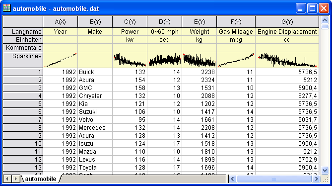
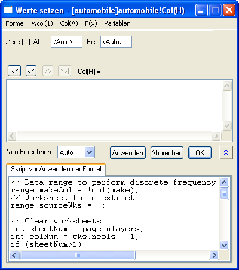
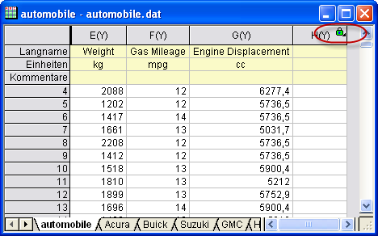
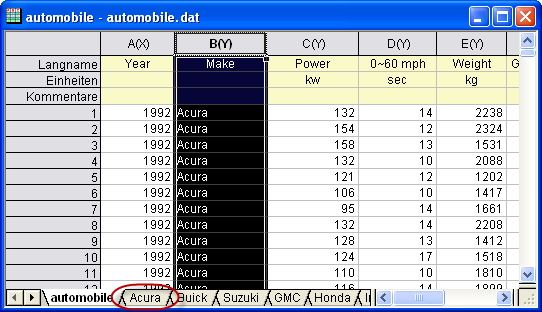
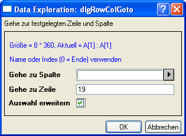
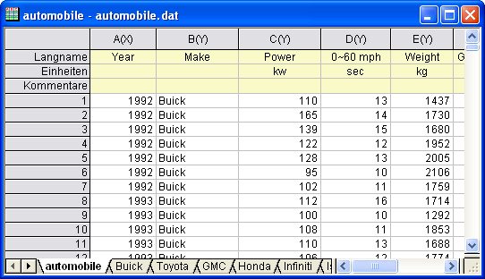

Erstellen von Analysevorlagen mit dem Dialogfeld Werte setzen
Zusammenfassung
Dieses Tutorial erläutert, wie Sie eine Spalte hinzufügen, Skript vor Anwenden der Formel festlegen und das Skript ausführen, wenn sich Daten in anderen Spalten ändern. Diese Technik kann verwendet werden, um eine Analysevorlage für die wiederholte Analyse von ähnlichen Daten zu erstellen.
Origin-Version mind. erforderlich: 8.0 SR6
Was Sie lernen werden
- Verwenden des Dialogfelds Werte setzen zum Erstellen einer Analysevorlage
- Auswählen von Zeilen mit der Funktion Gehe zu
Schritte
- Importieren Sie die Daten \Samples\Statistics\automobile.dat in eine neu erstellte Arbeitsmappe, wie unten zu sehen. In diesem Beispiel werden Daten entsprechend der Spalte Make in verschiedene Arbeitsblätter extrahiert.
- 
- Fügen Sie eine leere Spalte zu dem Arbeitsblatt hinzu und rufen Sie das Dialogfeld Werte setzen der Spalte auf. Geben Sie im Feld Skript vor Anwenden der Formel das unten stehende Skript ein.
// Data range to perform discrete frequency count
range makeCol = !col(make);
// Worksheet to be extract
range sourceWks = !;
// Clear worksheets
int sheetNum = page.nlayers;
int colNum = wks.ncols - 1;
if (sheetNum>1)
{
for (jj=2; jj<=sheetNum; jj++)
{
layer -d 2;
}
}
// Tree variable to hold discfreqs outputs
tree tr;
// Perform discrete frequency count
discfreqs irng:=makeCol rd:=tr;
// String array to get result from tree
StringArray sa;
sa.Append(tr.FreqCount1.Data1);
if(sa.GetSize() != NANUM )
{
// Loop to extract data
for (ii=1; ii<=sa.GetSize(); ii++)
{
string sn$ = sa.GetAt(ii)$;
// Extract condition string
string cond$ = "makeCol$ = " + sn$;
// Create worksheet with different Make name
newsheet name:=sn$ cols:=colNum outname:=on$ active:=0;
// Extract data
wxt test:=cond$ iw:=sourceWks c2:=colNum ow:=on$;
}
}
Dieses Skript führt zuerst die diskrete Häufigkeitszählung für die Spalte Make durch, um eindeutige Werte für Make zu erhalten. Erstellen Sie dann ein neues Arbeitsblatt für jede Marke und extrahieren Sie die Daten in den Blättern.
- 
- Stellen Sie sicher, dass der Modus für die Neuberechnung auf Auto gesetzt ist und klicken Sie auf OK. Die Daten werden auf verschiedene Arbeitsblätter aufgeteilt. Die leere Spalte (H) mit dem grünen Schloss weist darauf hin, dass diese Vorgehensweise automatisch aktualisiert werden kann.
- 
- Es gibt 18 Hersteller in den Quelldaten, d.h., es werden 18 neue Arbeitsblätter erstellt. Jetzt kann überprüft werden, ob die automatische Aktualisierung funktioniert.
Markieren Sie die Spalte Make und klicken Sie mit der rechten Maustaste. Sortieren Sie das Arbeitsblatt in aufsteigender Reihenfolge nach dieser Spalte (die automatische Aktualisierung wird bereits nach dem Sortieren ausgelöst). Sie können dann sehen, dass es 19 Zeilen für Acura gibt. Das Arbeitsblatt Acura befindet sich gleich neben dem Blatt der Rohdaten.
- 
- Markieren Sie die gesamte Zeile 1 und wählen Sie Bearbeiten: Gehe zu. Geben Sie 19 im Bearbeitungsfeld Gehe zu Zeile ein und aktvieren Sie das Kontrollkästchen Auswahl erweitern.
- 
Klicken Sie auf OK. Jetzt sind alle Zeilen für Acura markiert.
- Klicken Sie mit der rechten Maustaste auf die Auswahl und wählen Sie Löschen. Danach wird die automatische Aktualisierung durchgeführt und es gibt keine Ausgabe für Acura mehr.
- 